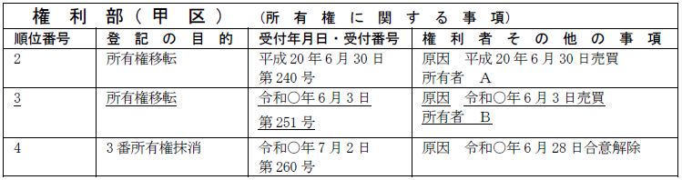
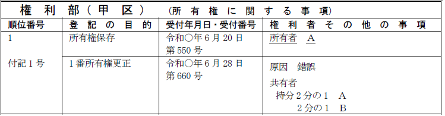
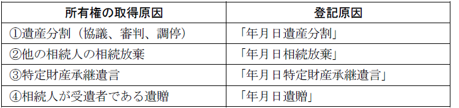
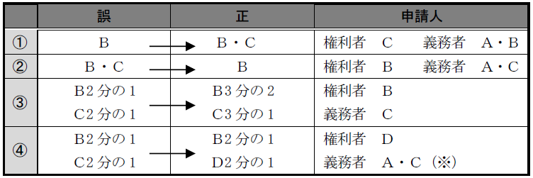
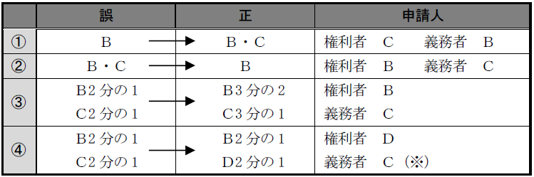
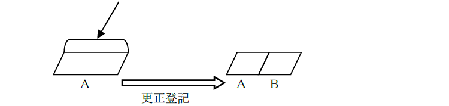
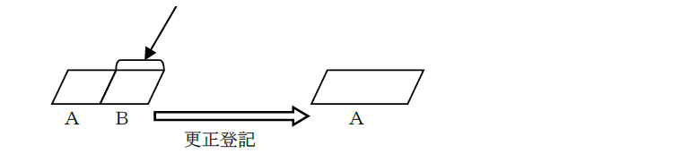
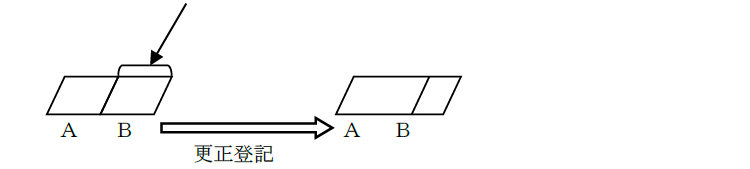
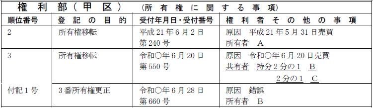

第１編 各 論
第１章 所有権の登記
第２節 所有権移転の登記
Ⅲ 所有権に関するその他の登記
1. 申請手続の方法
所有権移転登記がない場合における所有権保存登記の抹消の登記は、所有権保存登記をした際に通知された登記識別情報を提供して、所有権保存登記の登記名義人が単独で申請することができる（77条、22条本文、不登令8条1項5号）。
【申請例34 所有権保存登記の抹消】
2. 申請情報の内容
(1) 登記の目的
「○番所有権抹消」である。
(2) 登記原因及びその日付
登記原因は「錯誤」等とし、日付の表示は要しない。
(3) 申請人
所有権登記名義人の単独申請である（77条）。
(4) 添付情報
①登記原因証明情報（61条、不登令別表26添付情報ホ）
②登記識別情報（22条本文）
所有権登記名義人の登記識別情報
③印鑑証明書（不登令16条2項、18条2項）
申請人の印鑑証明書
④承諾証明情報（不登令別表26添付情報ヘ）
登記上の利害関係を有する第三者があるときは、当該第三者の承諾がなければ、抹消の登記を申請することができないので（68条）、第三者の承諾を証する当該第三者が作成した情報、又は当該第三者に対抗することができる裁判があったことを証する情報を提供しなければならない。
ex．所有権の保存登記がされた後に、当該所有権を目的とした抵当権設定登記がされている場合の抵当権者は、所有権保存の登記の抹消の利害関係人となる
3. 抹消後の登記記録
表題部に記録されている所有者の証明書によりその者から所有権を取得したことを証する者の申請によりされた所有権保存の登記を、錯誤により抹消した場合には、その登記記録を閉鎖することなく、表題部の所有者の記録を回復する（昭59.2.25民3.1085）。
1．申請手続の方法
所有権移転登記がなされた後、所有権移転の原因、法律行為等が解除された場合等には、利害関係を有する第三者の承諾があるか、又は、当該第三者が存在しないときには、所有権移転登記の抹消を申請することができる（68条）。
【申請例35 所有権移転登記の抹消 合意解除】
事例： Ａが、自分の土地をＢに売却し、甲区3番で登記をしたが、令和○年6月28日、売買契約を合意解除した。なお、利害関係人は、存在しない。

2. 申請情報の内容
(1) 登記の目的
「○番所有権抹消」と記載する。
(2) 登記原因及びその日付
ⅰ 所有権移転登記がはじめから無効であった場合
登記原因は「錯誤」と記載し、日付の記載は要しない。
ⅱ 所有権移転登記が取消し又は（合意）解除により無効となった場合
登記原因は「取消」（※）、「解除」、「合意解除」と記載し、日付はその効力が生じた日を記載する。
※ 意思表示が錯誤により取り消された場合にも、「取消」と記載する（令2.3.31民二.328）
(3) 申請人
抹消の登記により所有権の登記名義を回復する者を登記権利者、所有権の登記名義を失う者を登記義務者とする共同申請である（60条）。
(4) 添付情報
①登記原因証明情報（61条、不登令別表26添付情報ホ）
②登記識別情報（22条本文）
登記義務者の登記識別情報
③印鑑証明書（不登令16条2項、18条2項）
登記義務者の印鑑証明書
④承諾証明情報（不登令別表26添付情報ヘ）
登記上の利害関係を有する第三者があるときは、当該第三者の承諾がなければ、抹消の登記を申請することができないので（68条）、第三者の承諾を証する当該第三者が作成した情報、又は当該第三者に対抗することができる裁判があったことを証する情報を提供しなければならない。
登記上の利害関係を有する第三者に当たるのは、抹消される所有権移転登記がされた後に、以下のいずれかの登記を受けた者である。
ⅰ 抵当権・地上権等の設定登記
ⅱ 所有権移転（請求権）仮登記
ⅲ 差押え・仮差押え・処分禁止の仮処分の登記
ⅳ 所有権移転の登記前になされた根抵当権の設定登記につき極度額を増額する旨の変更の付記登記
抵当権設定登記の後にされた所有権移転登記の抹消を申請する場合、当該所有権移転登記の後にされた当該抵当権の実行としての競売開始決定に係る差押登記がされているときは、差押登記の登記名義人は登記上の利害関係人に該当するため、抹消登記の申請情報と併せて、差押登記の登記名義人の承諾証明情報を提供しなければならない（昭35.8.4民甲1976）。
3. 登記申請の可否
(1) 被相続人ＡからＢに相続登記がされた場合において、Ｂが相続人でなかったときは、Ｂは、単独でその登記の抹消登記を申請できず、Ａの相続人を登記権利者として申請しなければならない（登研333P.70）。所有権移転登記の抹消は、判決による場合を除き、共同申請によるのが原則である。
(2) 売買による所有権移転の登記後、売主が死亡した場合、その相続人Ａと買主Ｂとの間で売買契約が合意解除されたときは、Ａ及びＢは合意解除を原因としてその登記の抹消を申請することができる（昭30.8.10民甲1705）。
(3) ＡからＢ、ＢからＣへと順次に所有権移転登記がされている場合において、ＡＢ間及びＢＣ間の所有権移転登記を抹消するときは、まずＢＣ間の所有権移転登記の抹消を申請し、次いで、ＡＢ間の所有権移転登記の抹消を申請すべきである（昭43.5.29民甲1830）。登記義務者となれるのは、現在の登記名義人だからである（2条13号参照）。
(4) ＡからＢへ強制競売による売却を原因として所有権移転の登記がされている場合、Ａ及びＢは合意解除を原因として、その登記の抹消を申請することができるか？
→ できない（昭36.6.16民甲1425）。裁判所によってされた登記を、当事者の合意によって抹消することはできない。
1．申請手続の方法
(1) 意義
所有権の登記の内容が、登記をした当初から、錯誤又は遺漏により実体上の権利の内容と一致しない場合にする、それを一致させるための登記を所有権更正登記という。
権利の更正の登記は、登記上の利害関係を有する第三者の承諾がある場合及び当該第三者がない場合に限り、付記登記によってすることができる（66条）。
(2) 要件
ⅰ 登記をした当初から、登記に錯誤又は遺漏があって、登記と実体との間に不一致があること
ⅱ 登記と実体との間の不一致が、登記事項の一部についてのものであること
→ 登記と実体との間の不一致が、登記事項の全部に及ぶ場合には、もはや更正登記によることはできず、いったん当該登記を抹消し、新たな登記を申請すべきである。
ⅲ 当事者の申請による場合には、更正の前後を通じて同一性が認められること
ⅳ 登記上の利害関係人がある場合、その者の承諾あるいは、その者に対抗することができる裁判があること
→ 一部抹消の実質を有するためである（68条、不登令別表26添付情報へ）。
なお、所有権の現在の登記名義人でない前所有者の所有権の登記については、更正登記をする必要はない（登研27P.26）。登記は現状を公示すればよいからである。
【申請例36 所有権更正 単有名義から共有名義（所有権保存登記）】
事例： 甲が死亡し、相続人がＡＢであったが、申請を誤ってＡ単有名義の所有権保存登記をしてしまったことから、令和○年6月28日、ＡＢ共有名義（各持分2分の1）とする更正の登記を申請した。なお、利害関係人は、存在しない。

2. 申請情報の内容
(1) 登記の目的
「○番所有権更正」と記載する。
(2) 登記原因及びその日付
原則：登記原因は「錯誤」又は「遺漏」と記載し、日付の表示は要しない。
例外：次の場合には、日付の記載を要する。
ⅰ 法定相続分による相続登記後、以下の登記を登記権利者が単独で申請する場合（令5.3.28民二.538）

ⅱ 相続放棄をした者を除いて相続の登記をした後、相続放棄の申述が取り消され、その者を相続人に加える更正登記を申請する場合
登記原因日付は「年月日相続放棄取消」と記載し、日付は相続放棄の申述の取消しの審判が確定した日を記載する。
(3) 申請人
①相続以外の場合（前所有者をＡとする）

②相続の場合（被相続人をＡとする共同申請による場合）

※持分に変動のないＢは、申請人とならない。
③登記原因の更正
登記原因を売買から贈与に更正する場合、登記権利者は現在の登記名義人で、登記義務者は直前の登記義務者である（登研425P.129）。
④所有権保存登記の更正
区分建物に関する所有権保存の登記が表題部所有者から所有権を取得したＡ名義でされたが、実際は、ＡＢの共有であった場合の所有権保存の登記の更正の登記の申請は、Ｂを登記権利者、Ａを登記義務者として申請すべきである。
そもそも表題部所有者は、不動産登記法74条2項の所有権保存の登記の申請人とはならないので、その更正登記においても申請人とはならない。
(4) 添付情報
①登記原因証明情報（61条、不登令別表25添付情報イ）
所有権更正登記は、共同申請によるので、相続を原因とする所有権移転登記を更正する場合でも、錯誤又は遺漏があったことを証する市町村長、登記官その他の公務員が職務上作成した情報を提供する必要はない。
②登記識別情報（22条本文）
登記義務者の登記識別情報
③印鑑証明書（不登令16条2項、18条2項）
登記義務者の印鑑証明書
④承諾証明情報（不登令別表26添付情報へ）
所有権更正登記は、一部抹消登記の実質を有するので、登記上の利害関係を有する第三者があるときは、必ず、当該第三者の承諾を証する当該第三者が作成した情報、又は当該第三者に対抗することができる裁判があったことを証する情報を提供しなければならない。
ⅰ Ａ単有をＡＢ共有に更正する場合の登記上の利害関係人

Ａ単有の不動産を目的とする抵当権者・用益権者・仮登記権利者・差押債権者・抵当権付債権仮差押債権者
ⅱ ＡＢ共有をＡ単有に更正する場合の登記上の利害関係人

(ⅰ)Ｂ持分を目的とする抵当権者・仮登記権利者・差押債権者
※Ａ持分を目的とする抵当権者等は、利害関係人とならない。
ex. Ａ持分2分の1、Ｂ持分2分の1の共有の登記がされている不動産について、Ａ単有である旨の更正登記がされた場合、Ａ持分2分の1を目的とする抵当権者は、利害関係人とならない。なお、この場合、更正後の所有権の一部を目的とした抵当権とする更正登記が登記官の職権によりされることになる。
(ⅱ)不動産全体を目的とする抵当権者・仮登記権利者・差押債権者
※用益権者が利害関係人となるかどうかについては、争いがある。
ⅲ Ａ持分2分の1、Ｂ持分2分の1をＡ持分3分の2、Ｂ持分3分の1に更正する場合の登記上の利害関係人

Ｂ持分を目的とする抵当権者・仮登記権利者・差押債権者
※1 Ａ持分を目的とする抵当権者等は、利害関係人とならない。
※2 不動産全体を目的とする抵当権者等は、利害関係人とならない（昭47.5.1民甲1765）。
ⅳ その他
所有権の登記が債権者代位権に基づいてされているときは、代位債権者も利害関係人となる（昭39.4.14民甲1498）。
代位債権者にとっては、自らがした登記が変えられてしまうからである。
⑤住所証明情報
所有権更正登記により、新たに所有権登記名義人となる者がいる場合には、その者の住所証明情報（住民票の写し等）を提供しなければならない。
3．相続登記の更正
(1) 更正登記ができる場合
法定相続分による相続登記をした後に、以下の出来事が発生した場合には、更正登記を申請することができる。これらの場合、相続登記にははじめから誤りがあったといえるからである。
ⅰ 相続人の一人が相続を放棄した
相続放棄の効果は遡及するためである（民法939条）。この場合の登記権利者は持分が増える相続人、登記義務者は相続放棄をした者である。
ⅱ 相続人の一人に欠格事由があることが判明した
欠格事由に該当する者に直系卑属があるときは、その者が代襲相続人となるため、当該代襲相続人を権利者、欠格者を義務者として更正登記を申請することができる。
ⅲ 相続人の一人に特別受益者がおり、相続分を超える生前贈与を受けていたことが判明した
特別受益は相続開始時に存在するものなので、相続登記にははじめから誤りがあったといえる。
ⅳ 寄与分協議により相続分に変更が生じた
この場合、変更後の相続分に更正することができる（昭55.12.20民3.7145）。
寄与分は相続開始時に存在するものである。
ⅴ 共同相続人の一人に「相続させる旨の遺言」が発見された
当該相続人の単独相続の登記に更正することができる（平2.1.20民3.156）。
遺言の効力は、原則として遺言者の死亡時に発生する（民法985条1項）。また、遺言による相続分の指定は、法の規定に優先するためである（民法902条1項本文）。
ⅵ 相続人の一人に失踪宣告の審判が確定し、相続開始前に死亡したとみなされ、当該相続人に相続人となる者がいない場合
錯誤を原因として、当該相続人を除く他の相続人名義に更正することができる（昭37.1.26民甲74）。
(2) 更正登記ができない場合
①令和○年3月1日、甲土地の所有者であるＸが死亡し、嫡出子Ａ及びＢが相続した。②同年4月1日、Ａが死亡し、嫡出子Ｃが相続した。③同年5月1日、Ｃは、甲土地について、相続を原因としてＣへの所有権移転登記を申請し、それが受理された。この場合、Ｂは、甲土地の所有権登記名義人をＢＣとするために、更正登記を申請することができるか？
→ できない。この場合、当該登記を抹消した上で、ＸからＡＢへの所有権移転の登記の申請を、次いでＡからＣへのＡ持分全部移転の登記を申請すべきである（最判平17.12.15）。
【申請例37 共有名義から単有名義への更正登記】
事例： Ａが、自分の土地をＢに売却したが、申請を誤って、Ｂ及びＣに所有権移転の登記をしてしまったことから、令和○年6月28日、Ｂ単有名義への更正登記を申請した。なお、利害関係人は、存在しない。

【申請例38 所有権更正 全部移転から一部移転】
事例： Ａが、自分の土地の持分2分の1をＢに売却し、申請を誤って、所有権移転登記をしてしまったことから、令和○年6月28日、一部移転登記への更正登記を申請した。なお、利害関係人は、存在しない。
【申請例39 所有権更正 共有持分】
事例： Ａが、自分の土地をＢ（持分3分の1）Ｃ（持分3分の2）に売却したが、申請を誤って、Ｂ持分2分の1、Ｃ持分2分の1としてしまったことから、令和○年6月28日、持分について更正登記を申請した。なお、利害関係人は、存在しない。